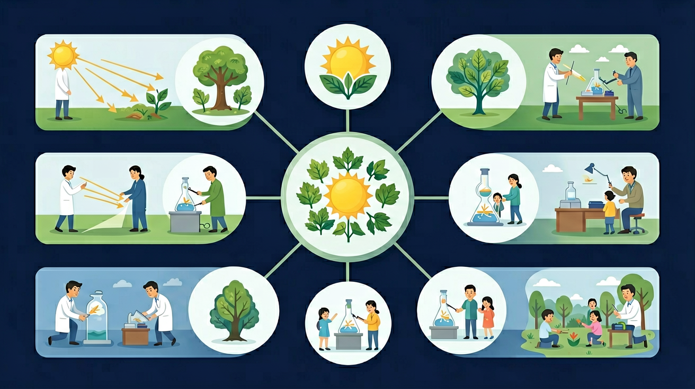

🎯 能说出光沿直线传播的条件
🎯 能判断不同介质对光传播的影响
🎯 能分析影子长短与光源位置的关系
❓ 为什么影子有时候长有时候短？
❓ 光能拐弯吗？为什么影子总是黑的？
❓ 透明玻璃有影子吗？
学完这一课，这些问题你都能自信地回答。
光为什么走直线？影子是怎么来的？一天中影子为什么会变？让我们一起探索光的秘密！
用 ABT 叙事结构点燃探究热情
阳光照进教室，地板上出现了桌椅的影子。我们知道太阳每天从东升到西落，而且早晨的影子又长又细，中午的影子短短的藏在脚下……
但是，你有没有好奇过：为什么光不会绕着弯走，非要走直线？为什么树下的洞洞形光斑都是圆的，而不是树叶的形状？影子到底是怎么"被造出来"的？
因此，今天我们就通过实验和模拟，揭开光的直线传播之谜，亲眼看到影子形成的全过程，还要观察一整天影子如何随太阳位置变化！
下列哪种情况能形成清晰影子？
影子长度主要取决于？
拖动光源和物体，实时观察影子的变化
光源（☀️）：可拖动，调整光源位置
物体（🪨）：可拖动，移动不透明障碍物
实时计算并显示光线路径和影子形状
点击不同时间段，观察影子长短和方向的变化
点击时间轴上的不同时刻，或拖动滑块，实时观察影子如何随太阳位置变化
不同材料的透光程度决定了影子的清晰度
💡 生活联系：窗帘是半透明材料，所以透进来的光会散射，房间里光线柔和。百叶窗关上是不透明的，能完全遮光。
完成各项探究活动，解锁专属徽章
随时解答你关于光和影子的疑问
理解光的行为，掌握影子的形成规律
光在同种均匀介质中是沿直线传播的。手电筒的光是直的，激光笔的光也是直的——光不会自己转弯！
实验：三孔对齐才能透光
光遇到不透明物体时被挡住，在物体背对光源的一侧形成光照不到的区域，这就是影子。
影子总在物体背对光源处
① 形状与物体相似
② 与物体相连
③ 光源越斜，影子越长
④ 光源越正上方，影子越短
太阳位置不断变化：
早晨→太阳低，影子长且朝西
中午→太阳高，影子最短
傍晚→太阳低，影子长且朝东
🤔 思考：如果在一个房间里只有一盏台灯，你把台灯放在桌子正上方，影子会跑到哪里？如果把台灯移到侧面呢？